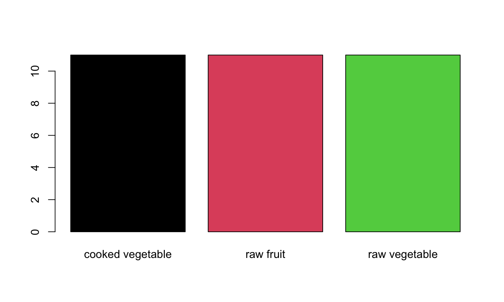
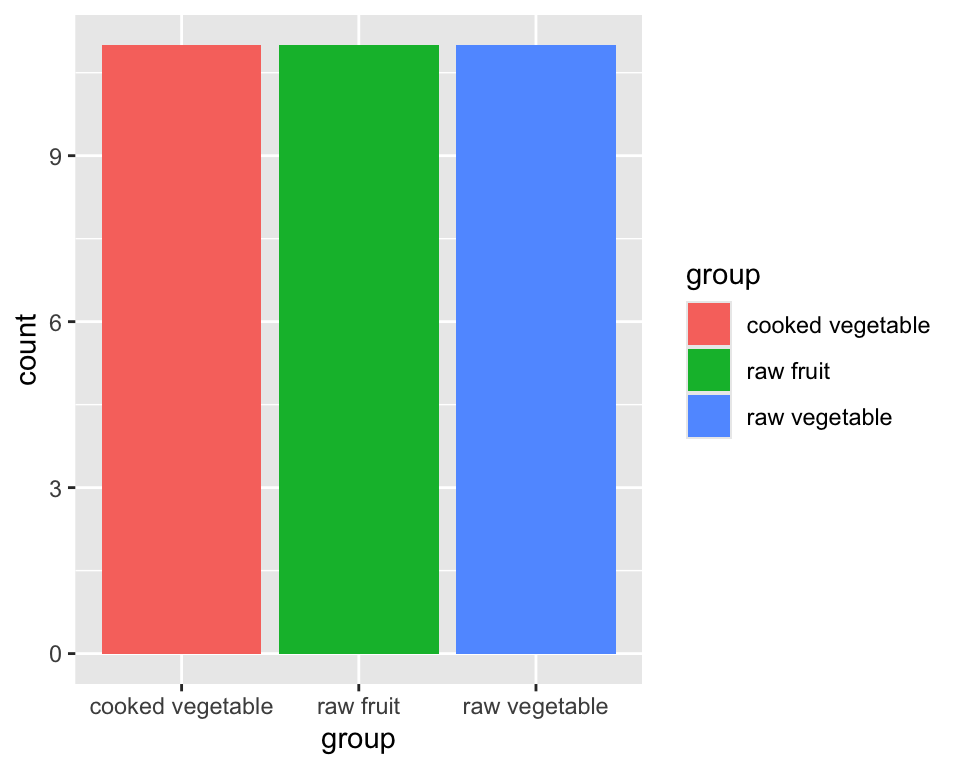
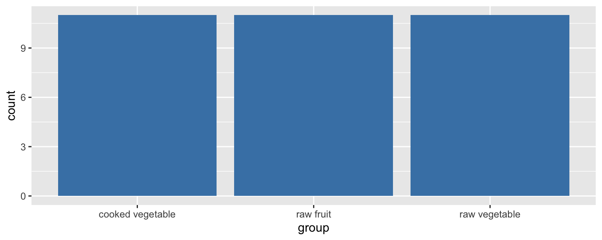
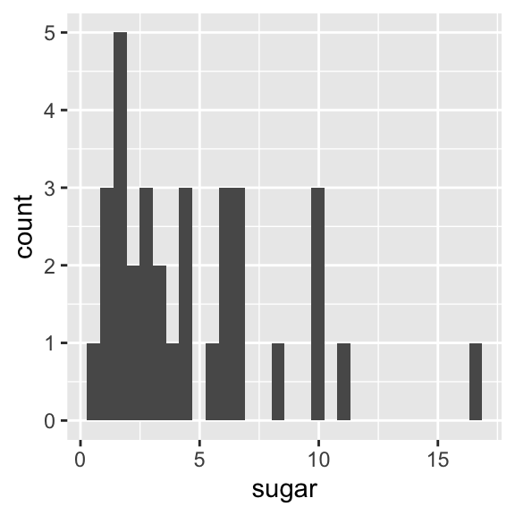
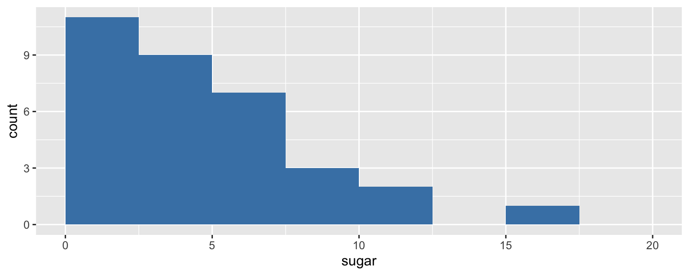
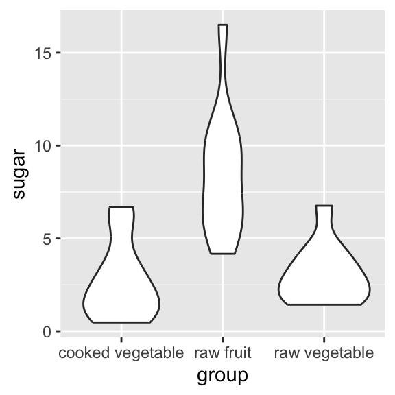
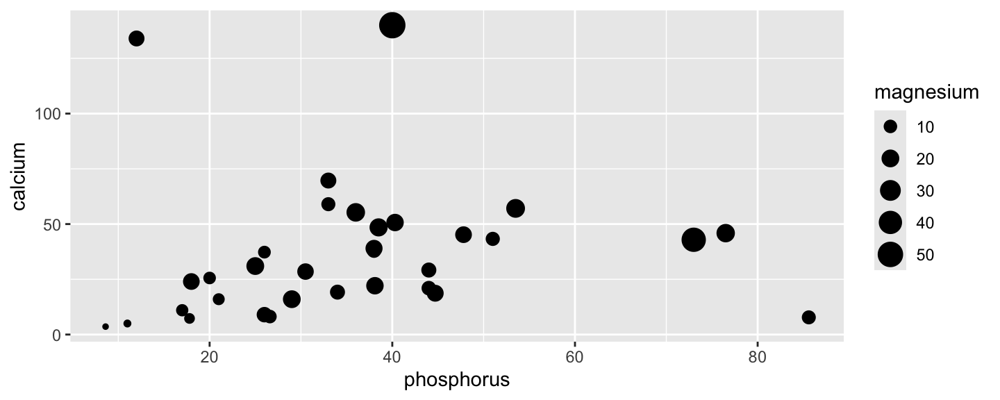
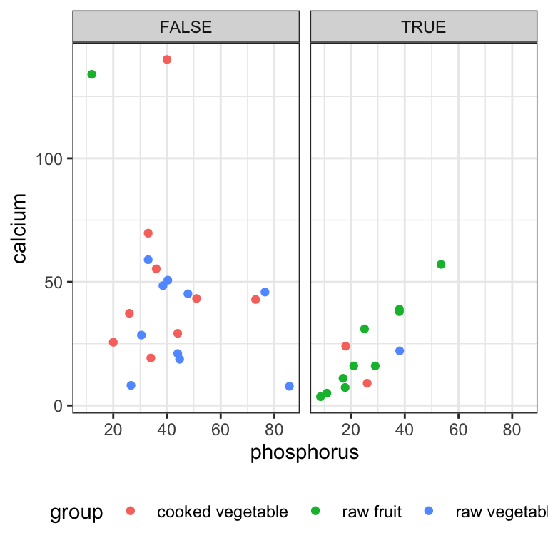

Nous aurons besoin du package ggplot2 :
- Vérifier que le package
ggplot2est bien installé - Si non, l’installer, puis le charger
library(ggplot2)
Nous allons également avoir besoin des données fruits et légumes :
data("fruveg", package = "intro2r")
Mercredi et/ou jeudi
Nous aurons besoin du package ggplot2 :
ggplot2 est bien installélibrary(ggplot2)
Nous allons également avoir besoin des données fruits et légumes :
data("fruveg", package = "intro2r")
From Data to Viz : https://www.data-to-viz.com/


La fonction de base pour les diagrammes en bâtons est barplot :
barplot(table(fruveg$group))
Avec des couleurs :
barplot(table(fruveg$group), col = 1:3)

ggplot(data = fruveg, aes(x = group, fill = group)) + geom_bar()

STOP !
ggplot : création d’un canevas vide dans on va dessiner le(s) graphe(s)aes : déclaration des paramètres esthétiques du graphes (position horizontale, verticale, couleur épaisseur, forme, transparence etc…)geom_bar : utilisation d’une géométrie

| Données | data |
Les données à représenter. Chaque ligne représente un élément à représenter graphiquement. |
| Géométries | geom_ |
Les formes à créer pour représenter les données. Cela peut être des points, des lignes, des surfaces etc. |
| Esthétiques | aes() |
Les paramètres esthétiques de ces formes. Par exemple la position, la couleur, la taille, la forme, la transparence etc. |
| Échelles | scale_ |
Des fonctions permettant de paramétrer la transformation de données en formes ou en objets graphiques. Par exemple la fonction scale_color_manual permet de choisir soi-même les couleurs à utiliser dans un graphique. |
À quoi servent les deux premières lignes ? Comment corriger la commande suivante pour obtenir le graphe à droite ?
fruveg$SucresSup5 <-
fruveg$sugar > 5
ggplot(***,
aes(***,
fill = SucresSup5)) +
geom_***()
ggplot“1” (voir ici)
Nous allons voir ensemble quelques géométries particulières qui permettent de créer des graphes classiques.
geom_bar |
Diagramme en bâtons sur des données non-agrégées |
geom_col |
Diagramme en bâtons (encore) sur des comptages existants |
geom_histogram |
Histogramme d’une variable quantitative |
geom_boxplot |
Diagramme de Tukey aka “boîte à moustache” aka boxplot |
geom_violin |
Diagramme en “violons” |
geom_point |
Nuage de points créé à partir de deux variables quantitatives |
geom_line |
Ligne tracée à partir de deux variables quantitatives |
On a déjà vu comment faire :
ggplot(fruveg, aes(group)) + geom_bar(fill = "steelblue")

S’utilise quand on connaît déjà la hauteur des barres.
vitamine <- data.frame(
groupe = c("compote", "crus", "exotique", "secs"),
VitamineC = c(14.2, 12.2, 32.1, 0.3))
ggplot(data = vitamine, aes(x = groupe, y = VitamineC)) +
geom_col()
Comment modifier le code précédent pour faire un diagramme en bâtons montrant le nombre de fruits et légumes ayant une teneur en Eau supérieure à 80 g / 100 g par groupe ?
(PS : il y a plus d’une solution possible)
ggplot(fruveg, aes(sugar)) + geom_bar()
ggplot(fruveg, aes(sugar)) + geom_histogram()
Représente des comptages de :
Représente des comptages ou des densités de :
Pour ce genre de graphe, il est important de choisir les intervalles sur lesquels les données seront énumérées.

ggplot(fruveg, aes(sugar)) + geom_histogram()

Pour faire un histogramme, on a besoin de répartir des valeurs numériques dans des classes.
hist le fait automatiquement avec l’algorithme de Sturges (ou Scott, ou Friedman-Diaconis si l’utilisateur le souhaite). Si on spécifie n, la fonction décidera un nombre de classes “approprié” proche de n. Pour forcer les classes, il faut utiliser breaks.geom_histogram crée par défaut 30 classes, charge à l’utilisateur de changer cela.
ggplot(fruveg, aes(sugar)) + geom_histogram(breaks = seq(0, 20, 2.5))

ggplot(fruveg, aes(sugar)) +
geom_histogram(breaks = seq(0, 20, 2.5),
fill = "steelblue")
ggplot(fruveg, aes(sugar)) +
geom_histogram(breaks = seq(0, 20, 2.5),
fill = "steelblue",
color = "white")

ggplot(data = fruveg, aes(x = sugar)) + geom_boxplot()
ggplot(data=fruveg, aes(x=group, y=sugar)) + geom_boxplot()
ggplot(data = fruveg,
aes(x = sugar, y = 1)) +
geom_violin()
ggplot(data = fruveg,
aes(x = group, y = sugar)) +
geom_violin()

Complétez le code suivant pour obtenir la figure de droite :
ggplot(fruveg,
aes(x = fibers > 1.5,
y = proteins,
fill = ***)) +
geom_***()
Les thèmes sont des fonctions qui permettent de modifier certains paramètres graphiques comme :
Exemple de fonctions thèmes (theme_***()) :
theme_bw() : pour un thème en noir et blanc,theme_minimal() : pour un thème minimaliste,theme_void() : pour un thème dépouillétheme_bw()ggplot(fruveg, aes(fibers)) + geom_histogram() + theme_bw()
theme_minimal()ggplot(fruveg, aes(fibers)) + geom_histogram() + theme_minimal()

theme_void()ggplot(fruveg, aes(fibers)) + geom_histogram() + theme_void()
theme_bw avec la commande ?theme_bwggplot(fruveg, aes(fibers)) + geom_boxplot() + theme_***()
ggtitlexlabylabMais je vous conseille d’utiliser la fonction labs qui permet de faire tout cela, et plus !
labs( title = "Titre du graphe", subtitle = "Sous-titre du graphe", x = "Titre de l'axe des x", y = "Titre de l'axe des y", color = "Titre de la légende des couleurs", shape = "Titre de la légende des formes" )
Avec la fonction theme(), qui a une syntaxe bien particulière : chaque élément doit être spécifié selon sa nature.
element_text(size=, colour = "", family = "")element_line(colour="", size=)element_rect(fill = "")theme()axis.title, axis.title.x, axis.title.y : taille, police, couleur, …axis.text, axis.text.x, axis.text.y : taille, police, couleur, …axis.ticks, axis.ticks.x, axis.ticks.yaxis.line, axis.line.x, axis.line.ypanel.background : couleurpanel.grid.major, panel.grid.minor : couleur, taillelegend.text: taille, police, couleurlegend.positionplot.title : taille, police, couleurgeom_pointCette géométrie nécessite des paramètres esthétiques de position (en \(x\) et \(y\)), et accepte optionnellement des paramètres esthétiques de taille, couleur et forme.
ggplot(fruveg, aes(x = phosphorus, y = calcium, size = magnesium)) + geom_point()

Lorsqu’ils sont spécifiés dans la fonction aes(), ces paramètres appliquent les valeurs d’une variable à une caractéristique des objets graphiques tracés par les géométries.
color ou colour : couleur du pointfill : couleur de remplissagesize : tailleshape : formealpha : transparencelinetype : type de lignelabel : étiquettesLorsqu’ils sont appliqués en dehors de la fonction aes(), leur comportement est plus général !
ggplot(fruveg,
aes(x = phosphorus, y = calcium,
color = magnesium)) +
geom_point() +
theme(legend.position = "bottom")

ggplot(fruveg,
aes(x = phosphorus, y = calcium)) +
geom_point(color = "limegreen")

Complétez la commande suivante pour obtenir le graphe ci-contre.
ggplot(fruveg,
aes(x = sugar,
y = proteins,
*** = magnesium,
*** = ***)) +
geom_***() +
***(title = "Fruits et légumes",
x = "Sucres (g/100 g)",
y = "Protéines, N x 6.25 (g/100 g)",
size = "Magnésium\n(mg/100 g)",
***= "Groupe") +
theme_***()
Pas de panique, on peut utiliser la transparence (aka alpha) :
ggplot(fruveg,
aes(x = phosphorus,
y = calcium,
color = group)) +
geom_point(alpha = 0.5,
size = 2) +
theme_bw() +
theme(legend.position =
"bottom")
scale_***Ces fonctions vont vous permettre de personnaliser l’échelle, en \(x\), en \(y\), mais pas seulement ! Ce concept est généraliser dans ggplot2 à de nombreux paramètres esthétiques. Par exemple :
scale_x_log10() permet de transformer l’échelle des \(x\) en échelle logarithmique,scale_y_log10() permet de transformer l’échelle des \(y\) en échelle logarithmique,scale_color_manual() permet de personnaliser les couleurs,scale_fill_manual() permet de personnaliser les couleurs de remplissage,scale_x_continuous() permet de personnaliser l’axe des \(x\) lorsque \(x\) est une variable “continue”,scale_y_discrete() permet de personnaliser l’axe des \(y\) lorsque \(y\) est une variable “discrète”,scale_x_continuous() permet de personnaliser l’axe des \(x\) lorsque \(x\) est une variable “discrète”,scale_y_discrete() permet de personnaliser l’axe des \(y\) lorsque \(y\) est une variable “discrète”.Complétez la commande suivante pour obtenir le graphe ci-contre.
ggplot(fruveg,
aes(phosphorus,
calcium)) +
geom_point(*** = "white") +
scale_***() +
scale_***() +
labs(x = "log10(Phosphore)",
y = "log10(Calcium)") +
theme_dark()
coord_***Pour modifier le système de coordonnées après avoir appliquer toutes les transformations spécifiées auparavant (par une fonction scale_*** par exemple). Par exemple :
coord_fixed pour fixer le ratio des unités de l’axe des \(y\) sur les unités de l’axe des \(x\),coord_equal quand ce ratio vaut 1,coord_flip pour échanger les axes,coord_polar pour passer d’un système de coordonnées cartésien à un système de coordonnées polairesTransformez les coordonnées du graphe suivant en coordonnées polaires (coord_polar(theta = "y")). Quel est le résultat ?
ggplot(fruveg, aes(x = 1, fill = group)) + geom_bar(width = 1) + theme_void()
*lim*Change le minimum et le maximum d’un axe. Attention, toutes les valeurs en dehors des nouveaux axes sont éliminées !
xlim, ylim ou lims pour spécifier l’étendue,expand_limits pour étendre l’étendue à certaines valeurs.Pour faire un “zoom” sans perdre de points, il faut utiliser la fonction coord_cartesian ou une fonction du type scale_***
facet_wrapS’uilise pour diviser le graphe en panneaux selon les modalités d’une variable catégorielle.
Attention à la syntaxe : elle est basée sur l’utilisation du terme vars, qui permet d’accéder aux variables du jeu de données spécifié.
Par exemple, pour diviser le graphe g en plusieurs panneaux selon les modalités d’un facteur fac, on écrira
g + facet_wrap(facets = vars(fac))
On peut également utiliser une “formule” :
g + facet_wrap(~ fac)
ggplot(fruveg,
aes(x = phosphorus,
y = calcium,
color = group)) +
geom_point() +
facet_wrap(vars(sugar > 5)) +
theme_bw() +
theme(legend.position =
"bottom")

facet_gridS’utilise de la même façon que facet_wrap.
Par exemple, pour diviser le graphe g en plusieurs panneaux selon les modalités d’un facteur factorow pour les lignes et factocol pour les colonnes, on écrira
g + facet_grid(rows = vars(factorow), cols = vars(factocol))
On peut aussi utiliser une formule :
g + facet_grid(factorow ~ factocol)
CONSEIL : pour l’utilisation de facettes, faites attention à bien nommer les modalités de vos facteurs pour rendre le graphe plus clair.
Fonctionnement et exemple :
g <- ggplot(fruveg, aes(group)) + geom_bar() ggsave(filename = "mongraphe.png", plot = g)
L’extension donnée dans filename sera magiquement détectée pour sauvegarder le fichier au bon format !
Nous avons vu un package de représentations graphiques très puissant ! ggplot2 fonctionne sur la base d’un canevas, de paramètres esthétiques comme la position en \(x\), en \(y\), les couleurs, la forme etc. A partir de ces paramètres, on va tracer les graphes à l’aides de géométries, qui peuvent se superposer !
ggplot2 est très complet… et très complexe